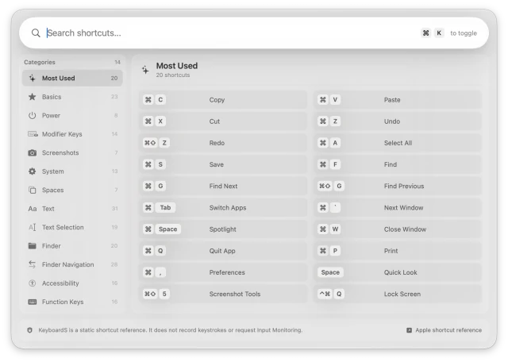
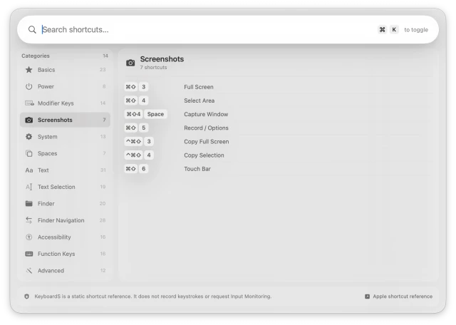

Requires macOS · No Account · No Subscription · Works Offline

The panel opens on Most Used — the twenty shortcuts you reach for daily.
KeyboardS lives in the menu bar and stays out of the way until you need it.
Press ⌘ + K from any app and the panel appears with every macOS keyboard
shortcut, organized and searchable. Press it again and it's gone.
It is a static reference, not a keystroke tool. KeyboardS never reads what you type,
and it never asks for the Input Monitoring permission that shortcut utilities usually demand.
Features
Menu Bar App — lives quietly in the menu bar, no Dock clutter.
Global Hotkey — ⌘ + K summons the shortcuts panel from anywhere, in any app.
Instant Search — type to find any shortcut across all categories in real time.
200+ Shortcuts — organized and labeled in plain language, not Apple's documentation phrasing.
14 Categories — the full macOS workflow, from Finder navigation to accessibility.
Privacy-First — no keystroke recording, no Input Monitoring permission required.
Apple Reference Link — one click to Apple's official shortcut support page.
Lightweight — no subscriptions, no accounts, no internet required.
Categories
Every shortcut sits in one of fourteen categories, with a running count so you always know
how much is in there.
Most Used
Basics
Power
Modifier Keys
Screenshots
System
Spaces
Text
Text Selection
Finder
Finder Navigation
Accessibility
Function Keys
Advanced

Pick a category from the sidebar, or just start typing to search across all of them.
Privacy
Most shortcut apps watch your keyboard to work. KeyboardS doesn't need to. It is a reference
list you open on purpose, so there is nothing to monitor and nothing to send anywhere.
No keystroke recording — the app never observes what you type.
No Input Monitoring permission — nothing to approve in Privacy & Security.
No account, no internet — the full shortcut list ships inside the app and works offline.
How to use
Open KeyboardS. It settles into the menu bar — no Dock icon appears.
Press ⌘ + K from any app to bring up the panel.
Type what you're after — "screenshot", "spaces", "select" — and results filter as you go.
Or pick a category from the sidebar to browse the whole set.
Press ⌘ + K again or click anywhere to dismiss it and carry on.